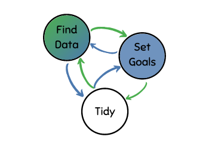

Starting a new data science project (especially for the first time) can feel like a monumental task. You’ve probably read a bunch of data science articles or gone through an online course and you’re keen to apply your new-found knowledge to some actual data (that does not involve petal width).
But where do you start? How do you go through this process so that you come out the other side feeling excited and motivated to continue your data science journey rather than feeling like some kind of imposter?
The solution to this is a project flow that guides you from getting started through to each step along the way. The most difficult part is just starting.
Trust me, I know the feeling all too well.
If you don’t have a solid process for starting your data science project off on the right foot then you will most likely just procrastinate yourself out of actually doing anything!
I am going to share the process I follow whenever I start a data science project.

There are two starting positions in this project flow. Either you start with data or you start with a goal in mind.
The reason the process is so flexible is because you may not know what is possible with your data until you start tidying it up a bit and doing some basic exploration. This may spark up some ideas for how you want to move forward and then you can set more informed goals on how you want to proceed through the data.
Other times, the data could be neatly formatted and well documented and so just by going through the documentation you will get an idea of the the route that you want to take right away. In this case, you can set some goals early on and then tidy up the data to get it ready for your analyses.
Also, you should not view this process as a concrete 1-2-3-done! sort of deal. It is intended to be looped and iterated until you have a good idea of what you want to achieve and how you will be going about performing your analyses.
You will feel the invariable urge to skip setting some goals for your project. You will probably be super pumped to jump right into the deep end and write some awesome code but I urge you to resist this temptation. If you do not set clear goals at the start of the project, you will not know what success looks like and you will get caught in the clutches of analysis paralysis.
Success just feels better, so let’s aim for that.
I recommend that you check out my other blog posts on the best places to find data and setting achievable goals if you’d like to go into more detail on these parts of the process.
Here are some quick actionable tips to take away if you don’t have the time to check out the other posts right now:
{{